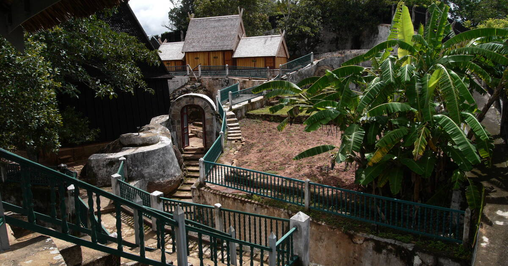
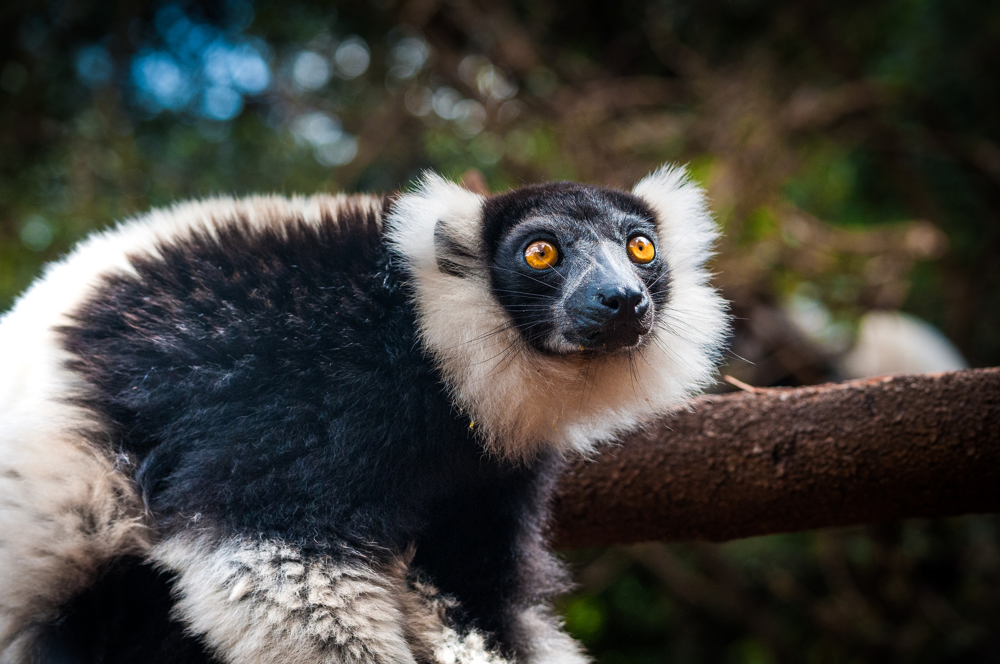
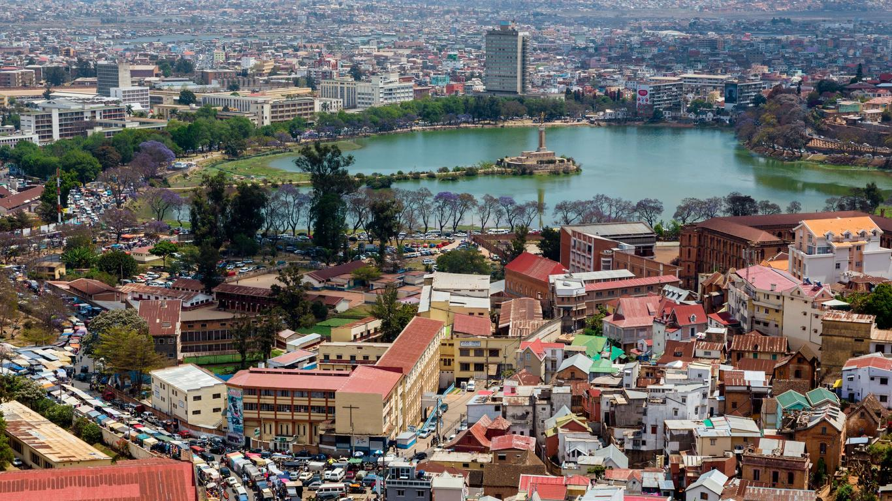
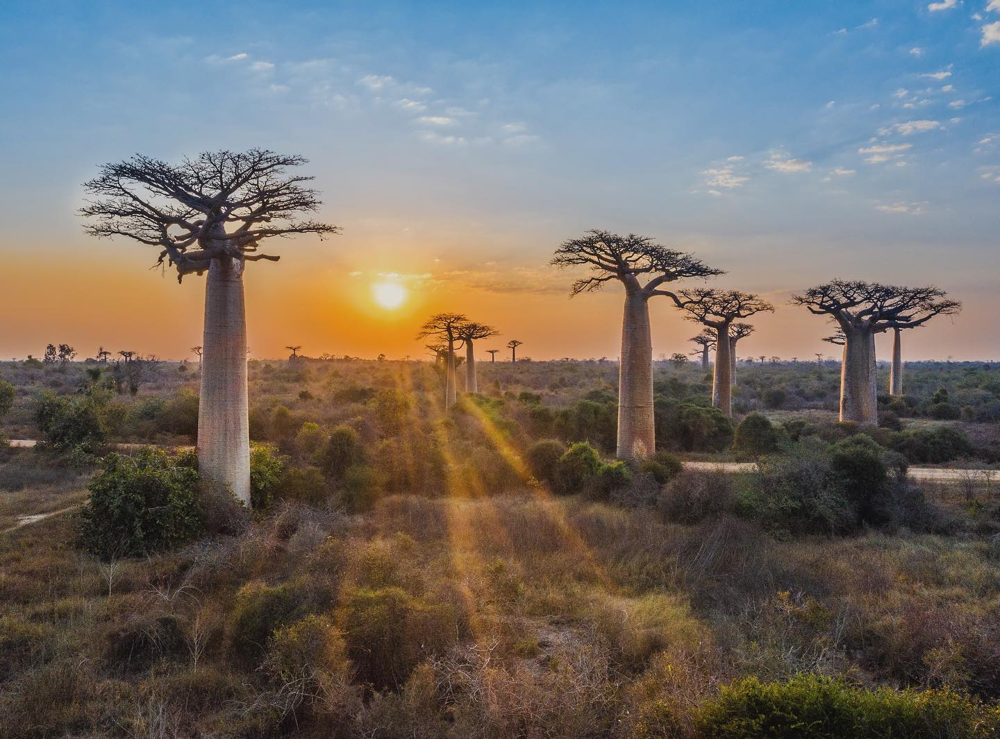
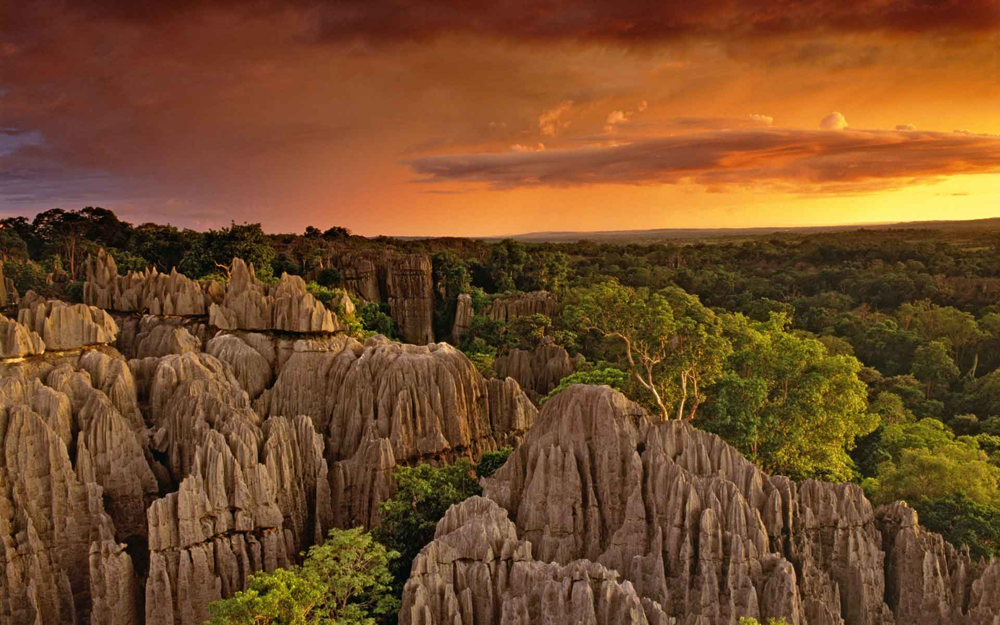
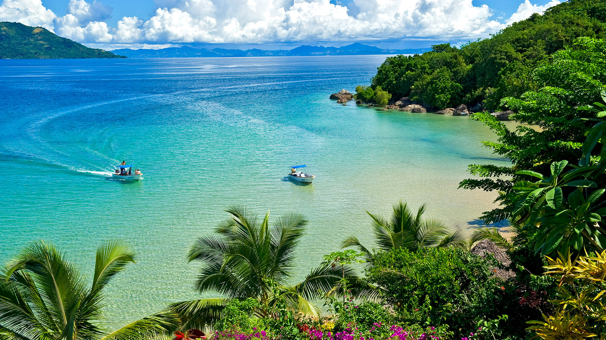
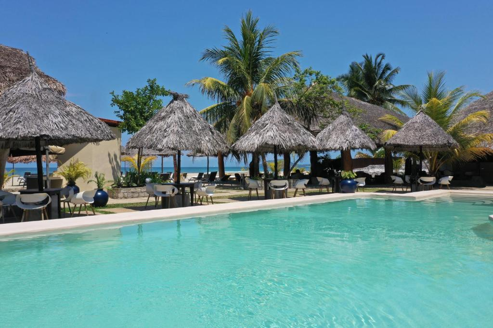
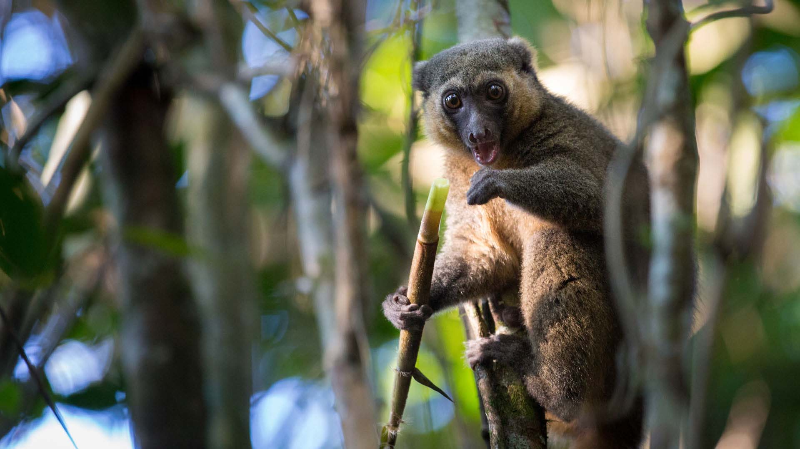
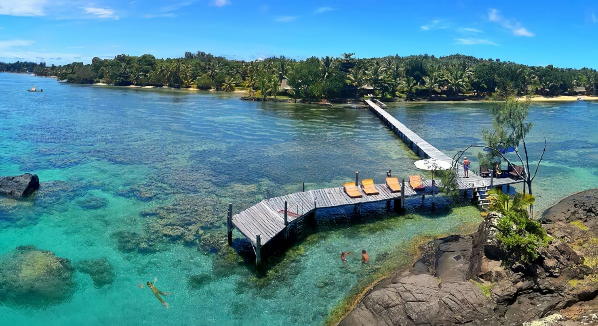

Nähtävyydet
Madagaskar on luonnonystävän unelmakohde, jossa jopa 90 % eläin- ja kasvilajeista on ainutlaatuisia koko
maailmassa. Saarella yhdistyvät jylhät maisemat, eksoottinen eläimistö ja trooppiset rannat.
Tunnetuin nähtävyys on ikoninen Baobab-puiden kuja, joka houkuttelee valokuvaajia erityisesti auringonlaskun
aikaan. Andasiben ja Ranomafanan kansallispuistot tarjoavat mahdollisuuden nähdä lemureita luonnossa, ja
Tsingy de Bemarahan terävät kalkkikivimuodostelmat tarjoavat seikkailunhaluisille ikimuistoisia
vaelluspolkuja.
Rantalomailijat viihtyvät Nosy Be -saaristossa tai Île Sainte-Mariella, jossa voi bongata kaskelotteja ja
sukeltaa kirkkaissa vesissä. Pääkaupunki Antananarivo ja historiallinen Ambohimangan kukkula tarjoavat
kulttuuria ja historiaa matkasi tasapainoksi.
Paras aika matkustaa on kuiva kausi toukokuusta lokakuuhun. Vaikka matkustaminen saarella vaatii hieman
kärsivällisyyttä, Madagaskar palkitsee uniikilla luonteenlaadullaan ja unohtumattomilla elämyksillään.









Lähteet:
UNESCO, Madagascar National Parks, Lonely Planet, Bradt Travel Guides, WWF Madagascar